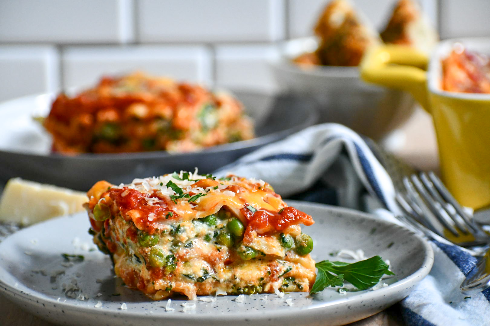

Veggie Lasagna

Description
This recipe is one of my go-to's when making a meal that feeds a large amount of people, as well as caters
to certain dietary restrictions. It's filling and delicious. I almost always get compliments when I make it for
family gatherings or social functions. I hope that it brings you the same success as well! On to the recipe.
Ingredients
- 15 oz whole milk ricotta cheese
- 1 cup of each cheese
- mozarella
- colby jack
- sharp yellow cheddar
- 24 oz of pasta sauce - I like to go with Rao's spicy arrabiata, but you're free to make your own
- 2 cups of broccoli florets, finely chopped
- 1 bag of fresh spinach, finely chopped
- If you only have frozen spinach, that's fine too! Just set it out to thaw and make sure you drain and
squeeze any remaining liquids.
- 1 medium bell pepper finely chopped
- 1/3 cup frozen peas
- 1-2 jalapenos, finely chopped
- 5 garlic cloves, finely minced
- 2 tbsp of Italian seasoning
- 3 tbsp olive oil
- 2 tsp crushed red pepper
- salt and pepper as needed
- 1 box of lasagna sheets
Okay! Now that we have all the ingredients out of the way, let's get into the actual steps of the recipe.
Instructions
- Preheat your oven to 350F. Cook your pasta according to its package instructions and drain well
- In a large pan, heat some olive oil and add the onions, garlic, and jalapenos. Cook for 2-3 minutes and
add the bell peppers, broccoli, and peas along with all the seasonings. Stir and cover pan with lid to
allow the broccoli and peas to fully cook. Leave for around 4-5 minutes on med-low heat.
- Add spinach and cover with lid for about 3 minutes. Let the spinach wilt down.
- Once the prior mixture has cooked and cooled off, mix in the ricotta cheese.
- Now it's time to assemble the lasagna!
- Pour 1/3 of the sauce into the bottom of the baking pan or dish.
- Layer on 3-4 lasagna sheets
- Top with the veggie mixture and cheese
- Repeat those steps around 2-3 times
- Once you're done, put on one more lasagna sheet, and top off with an 1 cup of sauce and 1 cup of cheese.
- Cover the baking dish with foil and place in the oven to bake at 350F for 20 minutes
- And you're done! Serve to your friends and family and enjoy!